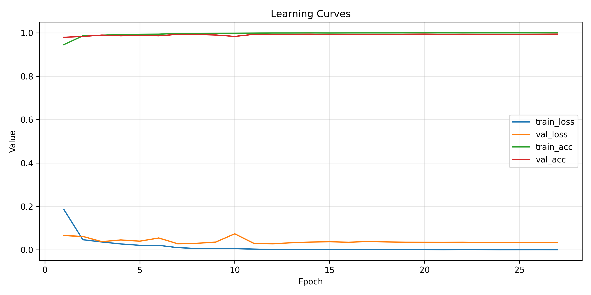

reports/task1/summary.json）。artifacts/task1/training_durations.json），在 RTX 4060 Laptop GPU 上執行。| 項目 Item | 設定 Setting |
|---|---|
| Dataset | tf.keras.datasets.mnist（28×28、灰階、10 類） |
| Split | Train 55,000 / Val 5,000 / Test 10,000（以最後 10% 當驗證集） |
| Normalization | 像素除以 255 → [0,1]，不另行標準化 |
| DataLoader | tf.data.Dataset，train 集 shuffle=10,000，batch size=128 |
| Artifacts | 影像與分類報告輸出於 reports/task1/images/, reports/task1/ |
| 組件 | 配置 |
|---|---|
| Architecture | 3×(Conv-BN-ReLU-Conv-BN-ReLU-MaxPool) → Dense(256) → Dropout(0.5) → Dense(10, softmax) |
| Filters / Kernels | [32, 64, 128] with default kernel [3,3,3]；stride sweep 允許 [1,1,2], [2,1,1] |
| Optimizer | Adam (lr=1e-3, β1=0.9, β2=0.999, ε=1e-7) |
| Regularization | Dropout(0.5) + 可選 L2 |
| Schedules | ReduceLROnPlateau (patience=3, factor=0.5), EarlyStopping (patience=7, restore best) |
| Seed / Repro | CONFIG["seed"]=20250318，確保訓練重現一致 |
| Split | Loss | Accuracy |
|---|---|---|
| Train | 1.20e-05 | 100.00% |
| Val | 0.0348 | 99.42% |
| Test | 0.0172 | 99.62% |

觀察：
| Tag | Stride | Kernel Sizes | Test Acc. | Test Loss |
|---|---|---|---|---|
| stride1-1-1_kernel3-3-3 | [1,1,1] | [3,3,3] | 99.52% | 0.0206 |
| stride1-1-1_kernel5-3-3 | [1,1,1] | [5,3,3] | 99.52% | 0.0236 |
| stride1-1-1_kernel5-5-3 | [1,1,1] | [5,5,3] | 99.47% | 0.0235 |
| stride1-1-2_kernel3-3-3 | [1,1,2] | [3,3,3] | 99.49% | 0.0250 |
| stride1-1-2_kernel5-3-3 | [1,1,2] | [5,3,3] | 99.49% | 0.0225 |
| stride1-1-2_kernel5-5-3 | [1,1,2] | [5,5,3] | 99.45% | 0.0236 |
| stride2-1-1_kernel3-3-3 | [2,1,1] | [3,3,3] | 99.30% | 0.0315 |
| stride2-1-1_kernel5-3-3 | [2,1,1] | [5,3,3] | 99.26% | 0.0317 |
| stride2-1-1_kernel5-5-3 | [2,1,1] | [5,5,3] | 99.36% | 0.0311 |
重點： 第一層 stride=1 是性能關鍵；stride=2 會犧牲約 0.2%–0.3% 的準確率。Kernel 變大僅帶來微幅差異，建議以 3×3 為主以兼顧效率。
| λ | Test Acc. | Test Loss | Weight Norm |
|---|---|---|---|
| 0 (baseline) | 99.60% | 0.0138 | 371.71 |
| 1e-5 | 99.55% | 0.0332 | 366.00 |
| 1e-4 | 99.50% | 0.0617 | 199.30 |
| 5e-4 | 99.52% | 0.0453 | 105.31 |
| 1e-3 | 99.45% | 0.0744 | 113.44 |
解析：
weights_*_1_*.png) 仍維持以 0 為中心的對稱形態，證明模型並未因正則化而偏移決策門檻。
reports/task1/feature_map_observations.md 紀錄相符。| 任務 | Epochs Ran | 時間 (s) | 時間 (min) |
|---|---|---|---|
| baseline | 27 | 94.56 | 1.58 |
| stride1-1-1_kernel3-3-3 | 24 | 75.28 | 1.25 |
| stride2-1-1_kernel5-3-3 | 21 | 47.68 | 0.79 |
| l2_0e00 | 26 | 88.27 | 1.47 |
| l2_1e-03 | 19 | 69.16 | 1.15 |
（完整紀錄請參考 artifacts/task1/training_durations.json）
reports/task1/images/、reports/task1/，程式記錄於 project/src/task1_mnist_pipeline.py。python task1_mnist_pipeline.py --mode all 即可重新生成。